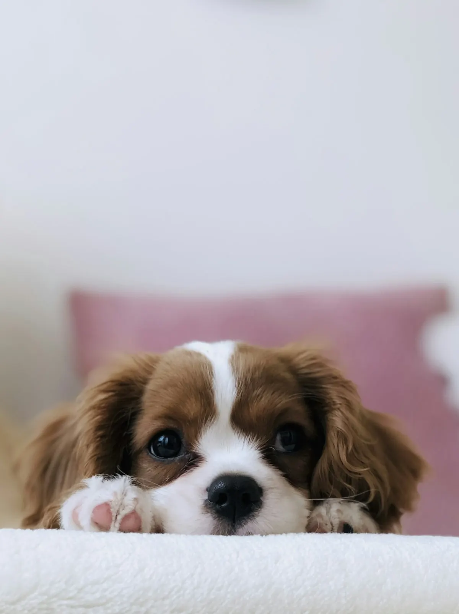
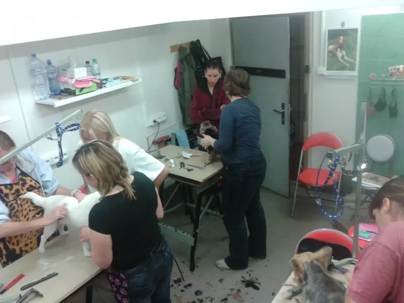
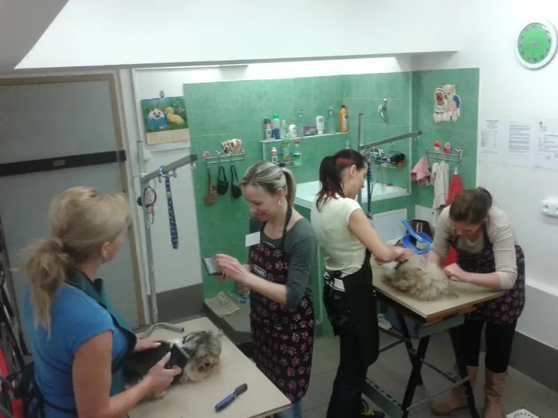
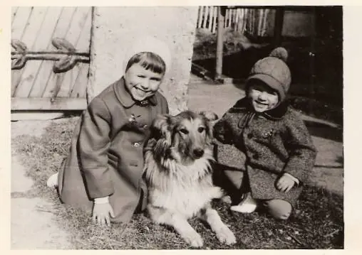
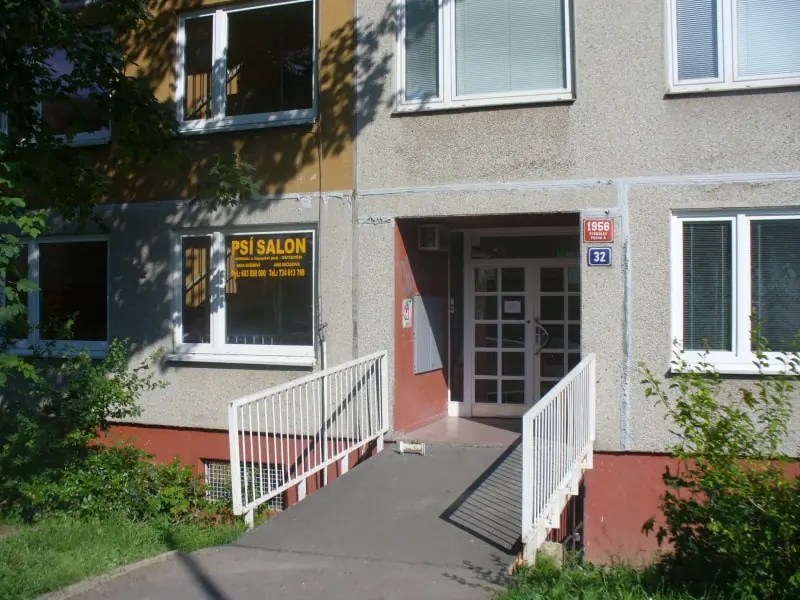

Grooming Prague's dogs since 2004
A fresh trim, a happy pup
Full grooms, bath & brush and nail trims for small and medium breeds – done gently, without sedation, and you're welcome to stay and watch.
- 1 minute from Lužiny metro (line B)
- Owners welcome to stay
- No sedation, ever

Everything your dog's coat needs
From a quick bath & brush to a full show groom. Every dog is handled with patience – puppies get a gentle, gradual introduction to the table.
Full groom & haircuts
Breed-standard or practical pet trims, by scissor and clipper. A full shave-down or a quick face-and-ears tidy-up are options too.
Bath & blow-dry
A proper wash with quality dog cosmetics, gentle drying and coat conditioning to suit your dog's coat type.
Show grooming
Precision styling to breed standard, ready for the show ring.
Hand stripping
Proper hand stripping for wire-coated breeds, keeping the coat healthy and doing its job.
De-matting & brush-out
Careful de-matting of tangled or felted coats and a thorough undercoat brush-out.
Nails, ears & glands
Nail trims, ear cleaning and plucking, and anal gland expression – quick add-ons to any visit.
🛍️ The salon also stocks a small selection of brushes, doggy outfits, treats and coat-care products.
Honest prices, no hidden fees
Guide prices valid from 1 January 2026. The final price is confirmed at the salon based on your dog's size and coat condition – you'll always know before we start.
Small dogs
up to 25 cm at the withers · Yorkies, Maltese, Shih Tzus…
| Haircut | CZK 500–700 |
| Bath & blow-dry | CZK 200–300 |
| De-matting (per 15 min) | CZK 240 |
Medium dogs
up to 45 cm at the withers · Cockers, Schnauzers, Poodles…
| Haircut | CZK 600–900 |
| Bath & blow-dry | CZK 300–500 |
| De-matting (per 15 min) | CZK 240 |
Add-ons
| Nail trim | CZK 60 |
| Anal gland expression | CZK 60 |
| Ear cleaning & plucking | CZK 60 |
| Tick removal & disinfection | CZK 20 |
| Weekend appointment (by arrangement) | +50% |
- Dogs booked for a haircut only must arrive bathed and brushed through – otherwise a bath needs to be added.
- Missed appointments without notice carry a CZK 100 fee, added to the rescheduled visit.
- Clean-up after an unwalked dog is CZK 100; salon disinfection after a dog with fleas is CZK 500.

Getting your dog ready
A few house rules that keep the visit smooth and stress-free – for your dog and for you.
- Bathed and brushed (haircut-only bookings)Shampoo twice with conditioner no more than a day before, dry fully and brush right down to the skin. Or just add a bath to your booking and skip the hassle.
- Walked, and not on a full stomachGive your dog a proper walk before drop-off and skip the meal right before the visit.
- Vaccinated, wormed, flea-freeUp-to-date vaccinations are a condition of every appointment.
- Tell us about health issuesEpilepsy, skin growths, warts, old fractures, sore teeth – it all matters for safe handling on the table.
- Carry your dog in on rainy daysA freshly bathed dog that walks in through puddles goes straight back in the tub. A carrier, bag or your arms will do the trick.


Learn dog grooming from a pro
The salon has been running hands-on grooming courses since 2004 (taught in Czech). Dates are flexible – weekdays or weekends. During course days, model dogs get a free bath and groom; you can sign your dog up for the model database.


Dogs have been my whole life
I'm Hana Mašínová, and there hasn't been a time in my life without a dog in it. My first own dog was Beimi, a Shar Pei, back in 1993 – the Yorkies and Biewers that became my speciality followed soon after.
I've run this salon since 2004, first in the Lužiny shopping centre and now in a space on Píškova street that my brother and I rebuilt from scratch with our own hands. Every dog gets an individual approach: puppies learn the table patiently, step by step, and you're always welcome to stay and watch.
A heartfelt thank-you to the master groomers and veterinarians I've had the pleasure of working with over the years.
Good to know before you come
How do I book an appointment?
Do you speak English?
Does my dog need a bath before a haircut-only appointment?
Can I stay with my dog during grooming?
Do you sedate dogs?
How much will it cost?
Where are you and how do I get there?
Do you groom mixed breeds?
Finding us is easy
basement entrance · metro B, Lužiny station – 1 min walk
